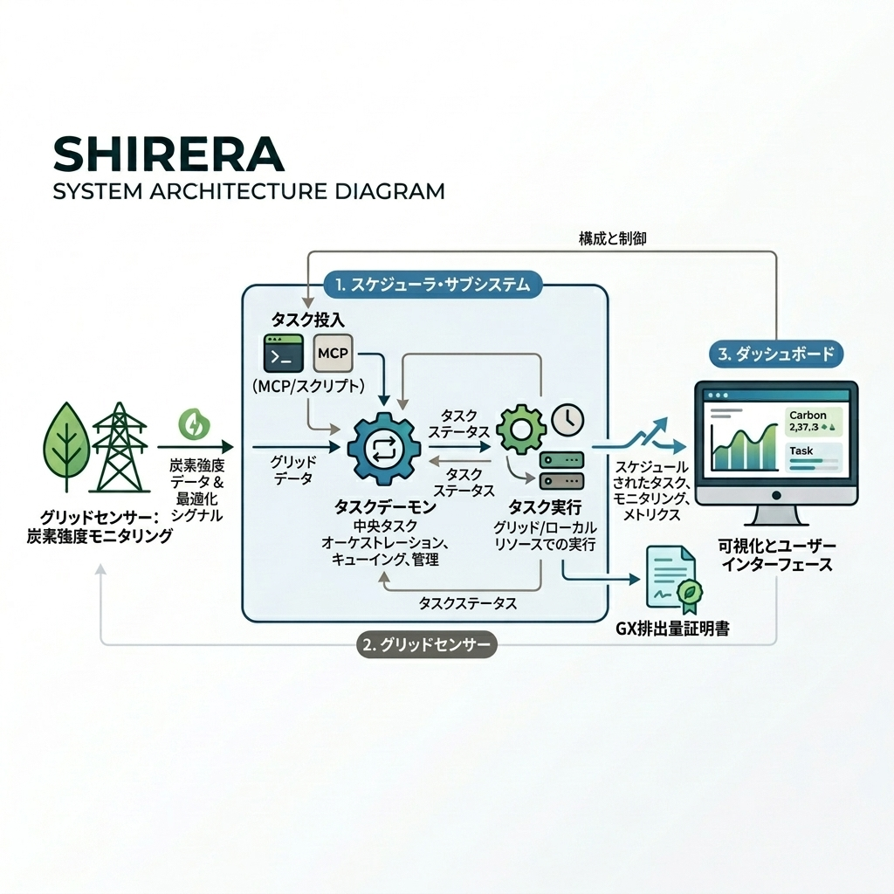
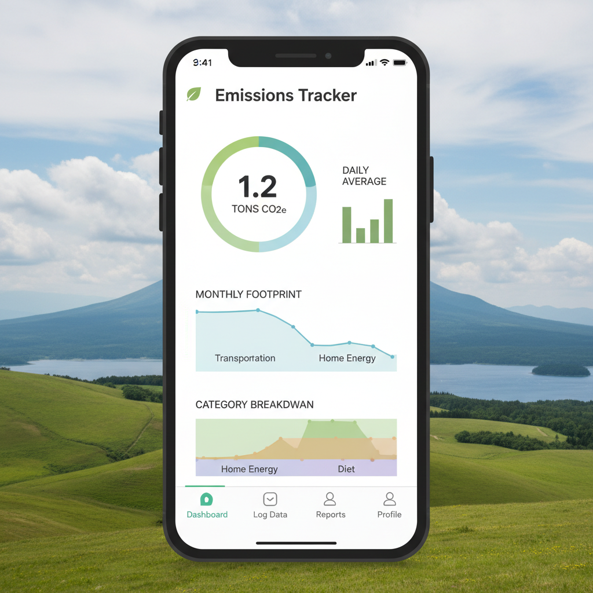
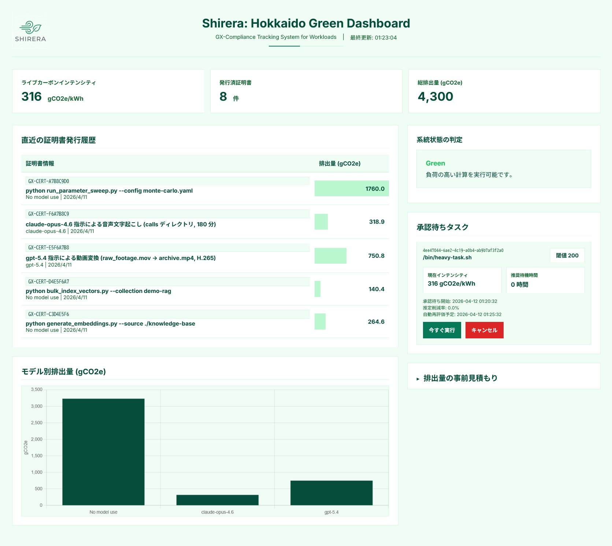
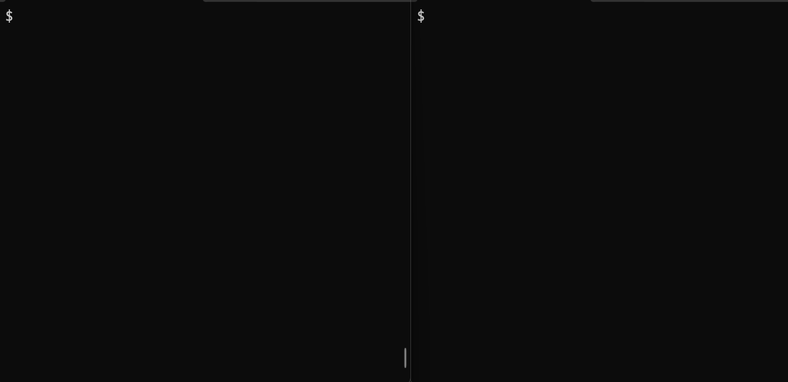

2026 年 4 月、GX 排出量取引制度（GX-ETS）が本格始動。
計算処理の CO₂ 排出量を定量的に示せない企業は、ステークホルダーへの説明責任を果たせない。
どれだけ CO₂ を排出しているか分からず、
ESG 報告や CN 目標達成の妨げになっている。
重い処理を電力の汚い時間帯に実行してしまい、
無駄に CO₂ を排出している。
カーボンアウェアな基盤を構築する余裕がない。
3 つのコアモジュールが連携し、計算ワークフローを丸ごとグリーン化する。
北海道電力の公開データから炭素強度（gCO₂e/kWh）をリアルタイムに推定*¹。
重い処理を再エネ発電のピーク時まで自動で賢く遅延実行します。
*¹ 炭素強度 = 350 + (300 · R_demand) - (500 · R_solar) [gCO₂e/kWh]
R_demand: 需要飽和度 (3k-5.5k MW), R_solar: 太陽光発電/総需要比
(HEPCO Public Data より 5分間隔で動的推定)

ESG 報告書の作成を手助け。
計算タスク完了後、実行時間ベースの CO₂ 排出量を JSON ファイルで発行。
GX-ETS 準拠フォーマットで報告資料にそのまま活用できます。

外部への通信は、北海道電力の公開データ取得のみ。
その他の不要なネットワークアクセスは一切発生しないため、
社内のセキュアな環境でも安全に導入・運用できます。
画面は開発中のものです

リアルタイムで炭素強度や承認待ちタスクが確認できるダッシュボード

ターミナルからシステム起動・計算タスクのキューを投入するデモ
数行の設定で既存システムやバッチ処理に今すぐ導入できます。
MCP 対応 (β) で AI エージェントからの直接利用も可能。
現在 PoC 段階のため、個別に導入支援します。
「今、北海道の電気はクリーンか？」を判断して、タスクの実行タイミングをコントロールするスケジューラーサービスです。タイミングを制御することで、カーボン排出量の削減に寄与します。
また、タスクの実行後には GX 排出量取引制度 (GX-ETS) に活用できる証明書が自動で発行されます。
システムを動かす既存のマシンにクライアントをインストールします。現時点では GitHub からソースをクローンしてインストールする形となっています。
直接的なコンプライアンスの要件を完全に満たすものではないため、直ちには認められません。
しかし、「再エネを賢く使った」という実質的かつ高度な排出削減アクションの実行記録にはなります。企業の ESG 評価の向上・社内意識の変革・将来の厳格な環境規制への布石として、企業の総合的な競争力強化に貢献するデータになりえます。
北海道電力が提供するデータを利用しています。資源エネルギー庁の指針に基づき、電力系統の透明性を確保するために公開が義務付けられているものです。サーバーに負荷がかからないよう、5 分間隔でデータをキャッシュしながら適切に利用しています。
北海道の電力需給構造を反映した合理的な推定モデルを採用しています。現時点ではプロトタイプ向けの近似式としての位置づけです。具体的には以下の 3 点の考え方に基づいています。
北海道の GX を推進し、道内の活性化につなげることです。
シリ (大地) + レラ (風) を組み合わせた造語です。北海道の再生エネルギーとして風力発電が特に盛んであることから、この名前が付けられました。ただし、上述の通り現時点では太陽光発電のデータをベースにモデル化しています。